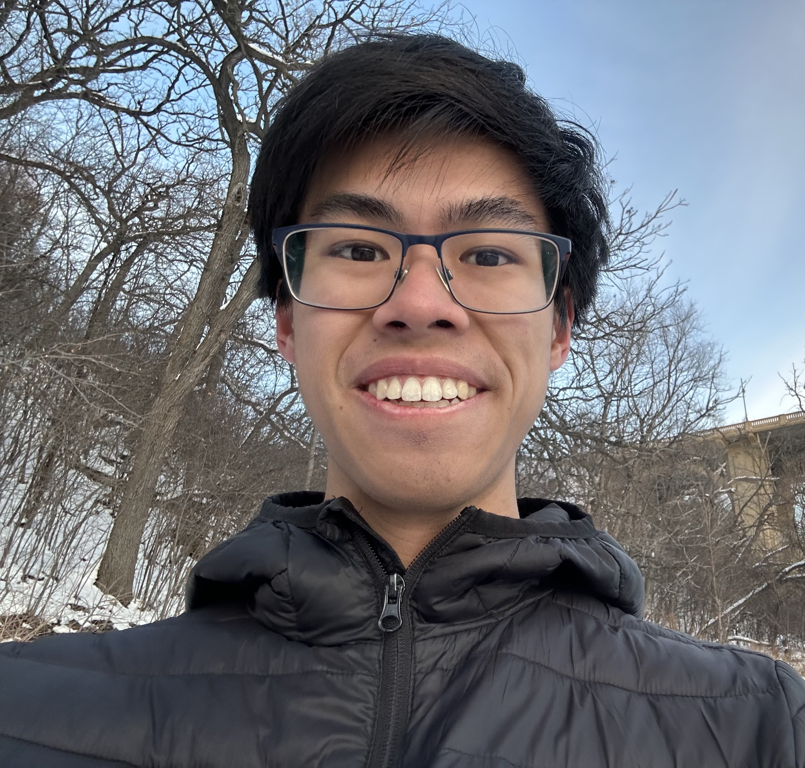
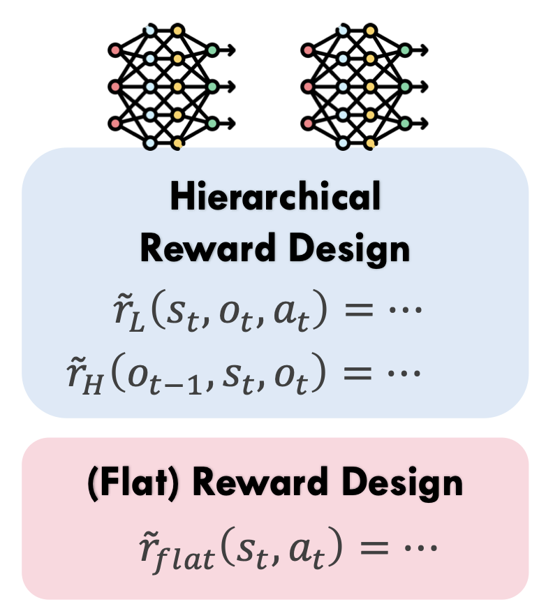
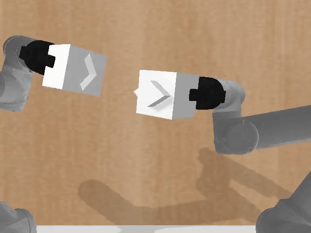
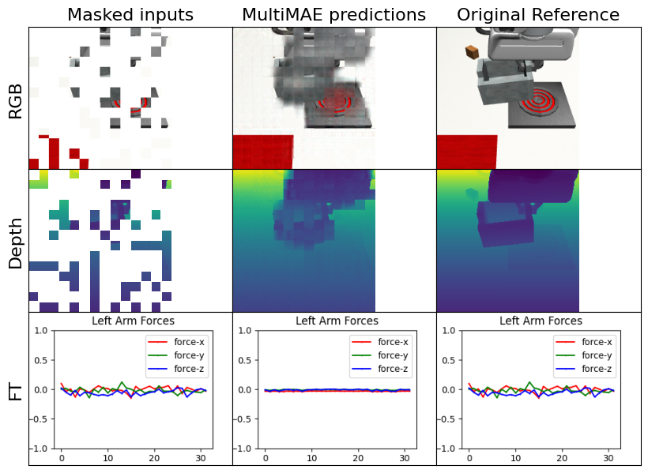
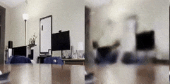
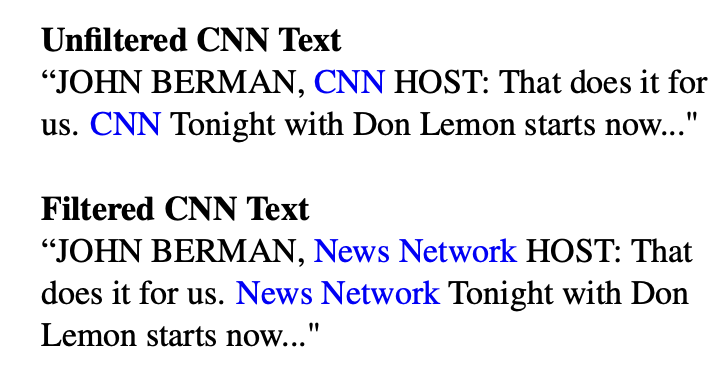
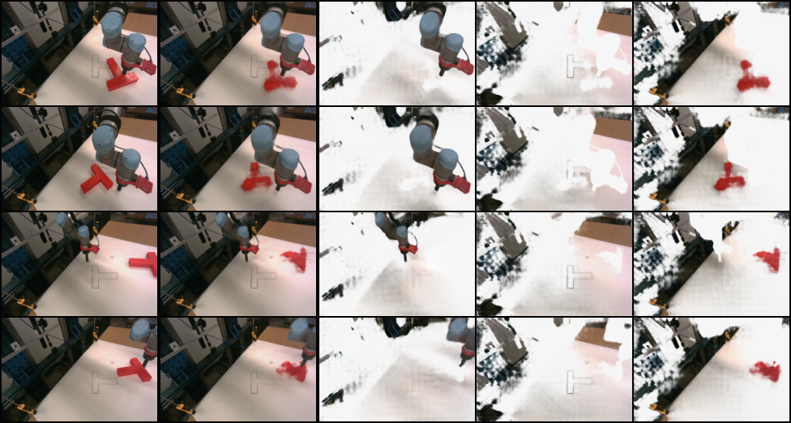
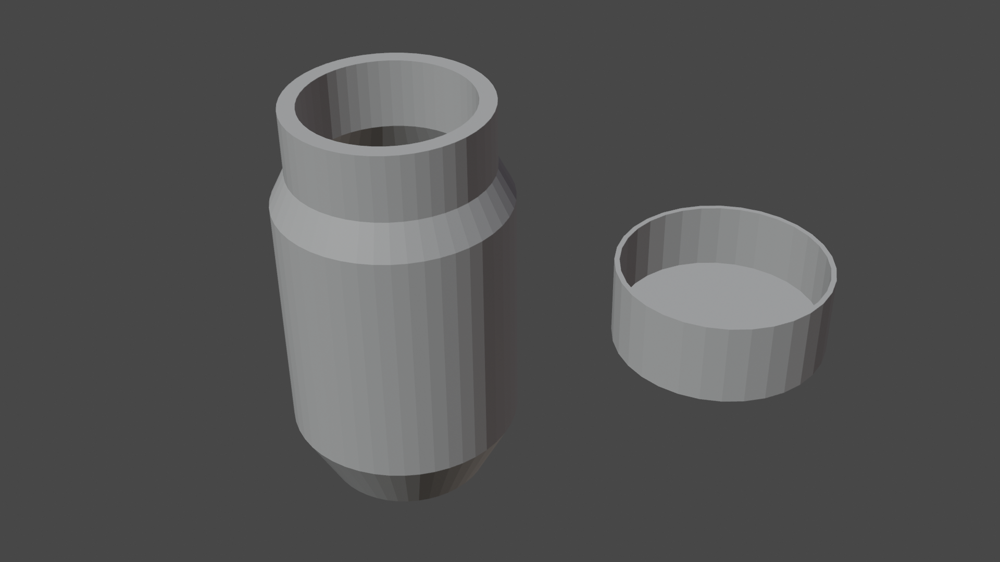
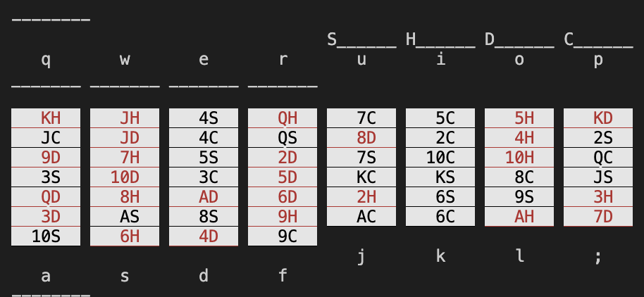
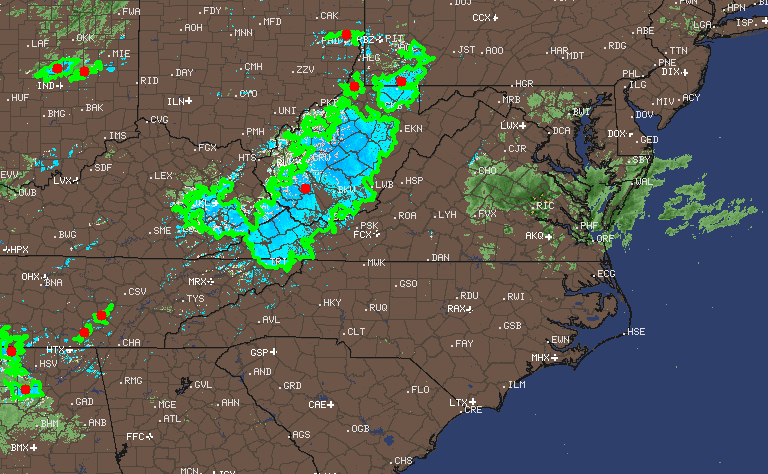

Ryan Diaz
Hello! I am a first-year CS Ph.D. student at Rice University, and I am currently doing research with Prof. Vaibhav Unhelkar at the Human-Centered AI and Robotics Group. Starting this Fall, my work will be generously supported by the NSF Graduate Research Fellowship (GRFP).
My research interests involve active learning, human-robot collaboration, and lifelong learning in robotics. I aim to build agents that can proactively adapt to their human teammates and generalize inferred preferences to a wide variety of tasks. I'm always trying to help humans and robots do cool things!
Previously, I was an undergraduate at the University of Minnesota where I worked with Prof. Karthik Desingh at the Robotics: Perception and Manipulation Lab on multisensory contact-rich robotic manipulation. I also got the chance to do research on reinforcement learning for autonomous driving with Prof. Yevgeniy Vorobeychik at the WashU CSE REU.
News
- [04/12/2026] I was awarded the 2026 NSF Graduate Research Fellowship!
- [12/19/2025] Our project Hierarchical Reward Design from Language was accepted to AAMAS 2026 as a full paper. See you in Paphos, Cyprus!
- [08/28/2025] I received the IROS-SDC Travel Award grant to travel to IROS 2025!
- [06/15/2025] AugInsert was accepted to IROS 2025. See you in Hangzhou, China!
- [05/15/2025] I graduated from UMN with a B.S. in Computer Science and Mathematics, summa cum laude with high distinction!
- [05/01/2025] AugInsert was accepted to the Beyond Pick and Place Workshop @ ICRA 2025. See you in Atlanta (GA), USA!
- [04/07/2025] I will be starting a CS Ph.D. at Rice University in Fall 2025, advised by Prof. Vaibhav Unhelkar!
- [12/28/2024] I was named an honorable mention for the 2025 CRA Outstanding Undergraduate Researcher Award!
- [10/22/2024] Our project AugInsert is now live on arXiv! You can find an overview video of the project here.
- [04/26/2024] This summer I am planning to go to the CSE REU at Washington University in St. Louis to work on algorithms for autonomous vehicle movement!
- [01/30/2024] Evaluating Robustness of Visual Representations was accepted to ICRA 2024. See you in Yokohama, Japan!
- [12/10/2023] Presented a video for the Fall 2023 Undergraduate Research Symposium at UMN! You can find an abstract of the project and the video here.
- [10/23/2023] Evaluating Robustness of Visual Representations was accepted to the 2nd Pretraining for Robot Learning Workshop @ CoRL 2023. See you in Atlanta (GA), USA!
- [04/25/2023] Presented a poster at the Spring 2023 Undergraduate Research Symposium at UMN! You can find an abstract of the project here.
Publications
*denotes equal contribution
Hierarchical Reward Design from Language: Enhancing Alignment of Agent Behavior with Human Specifications
Zhiqin Qian, Ryan Diaz, Sangwon Seo, Vaibhav Unhelkar
International Conference on Autonomous Agents and Multiagent Systems (AAMAS) 2026
We introduce the hierarchical reward design (HRD) problem that allows the integration of human preferences into hierarchical reinforcement learning algorithms. We instantiate a language-conditioned version of the HRD problem and solve it with an LLM-based reward generation pipeline, Language to Hierarchical Rewards (L2HR).

AugInsert: Learning Robust Visual-Force Policies via Data Augmentation for Object Assembly Tasks
Ryan Diaz, Adam Imdieke, Vivek Veeriah, Karthik Desingh
IEEE/RSJ International Conference on Intelligent Robots and Systems (IROS) 2025 Beyond Pick and Place Workshop at ICRA 2025
[Paper] [Website] [Video] [Code]
We build a multisensory imitation learning framework and evaluate it on an extensive set of task variations for a peg-in-hole task. We also explore data augmentation as a possible technique for increasing a policy's robustness to these variations.

Evaluating Robustness of Visual Representations for Object Assembly Task Requiring Spatio-Geometrical Reasoning
Chahyon Ku, Carl Winge, Ryan Diaz, Wentao Yuan, Karthik Desingh
IEEE International Conference on Robotics and Automation (ICRA) 2024 2nd Pretraining for Robot Learning Workshop at CoRL 2023
[Paper] [Website] [Video] [Code]
We introduce a novel dual-arm object assembly task that focuses on geometric and spatial reasoning. We compare multiple pretrained vision encoders in a behavior cloning framework across a large set of grasp and object geometry variations.
Projects

Filtering Robot Demonstrations with Probabilistic Data Structures
COMP 580: Probabilistic Algorithms and Data Structures (Rice University)
We use probabilistic data structures to filter an incoming stream of robot demonstrations to maximize state-action coverage while minimizing overall dataset size.

Multisensory Visuotactile Pretraining for Robotic Manipulation Tasks
CSCI 5980: Deep Learning for Robot Manipulation (University of Minnesota)
We implement a masked pretraining objective for a vision and force-torque observation encoder and perform downstream evaluation on a series of contact-rich robotic manipulation tasks.

Obstacle Detection and Avoidance in Simulated Autonomous Driving
CSE REU Project (Washington University in St. Louis)
[Report] [Poster] [Detection Code] [RL Code]
We use an object detection module and reinforcement learning to build an obstacle avoidance pipeline for an autonomous vehicle in the CARLA simulation environment.

An Exploration of Fourier Features for Image and Video Representations
MATH 5466: Mathematics of Machine Learning and Data Analysis II (University of Minnesota)
We investigate the effectiveness of Fourier Features in MLPs for coordinate-based representations of images and videos. We also explore their theoretical motivations via the Neural Tangent Kernel (NTK).


3D Semantic Segmentation of a Scene Using NeRFs and SAM
CSCI 5561: Computer Vision (University of Minnesota)
We perform semantic segmentation of a 3D scene by applying a Segment Anything Model (SAM) to a NeRF-rendered scene from a series of 2D images.

Object-Centric Representation for Imitation Learning in Robotics
CSCI 5527: Deep Learning: Models, Computation, and Applications (University of Minnesota)
We explore the use of slot-based representations (via slot attention) in the diffusion policy framework for robotic manipulation tasks.


Using Search Algorithms to Solve Free-Cell Solitaire Games
CSCI 4511W: Introduction to Artificial Intelligence (University of Minnesota)
We compare both uninformed and informed search algorithms (using a wide variety of heuristics) for solving a scaled-down version of the free-cell solitaire game.

Weather Radar Snow and Storm Cell Detection
Personal Project
We use classical computer vision techniques to segment snow and storm cells from weather radar images.